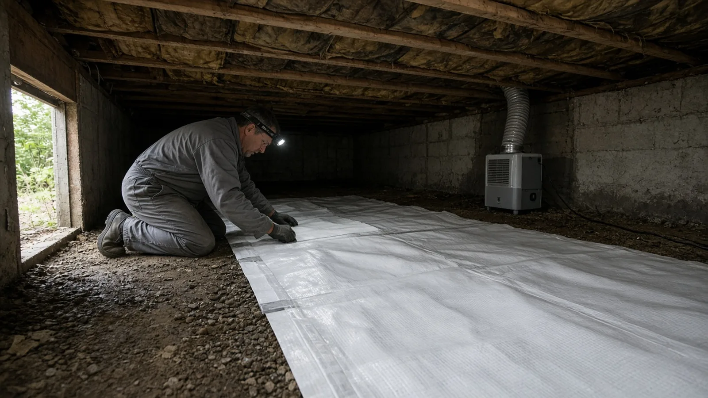
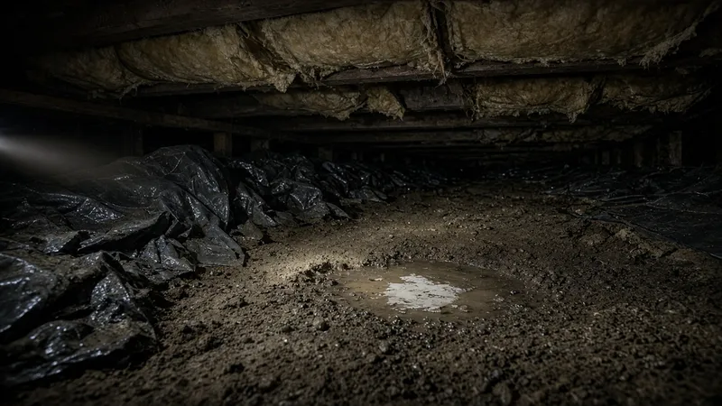
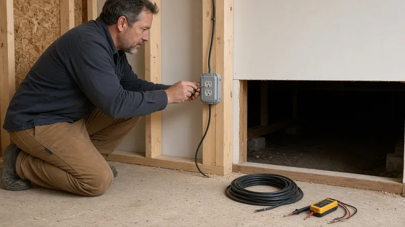
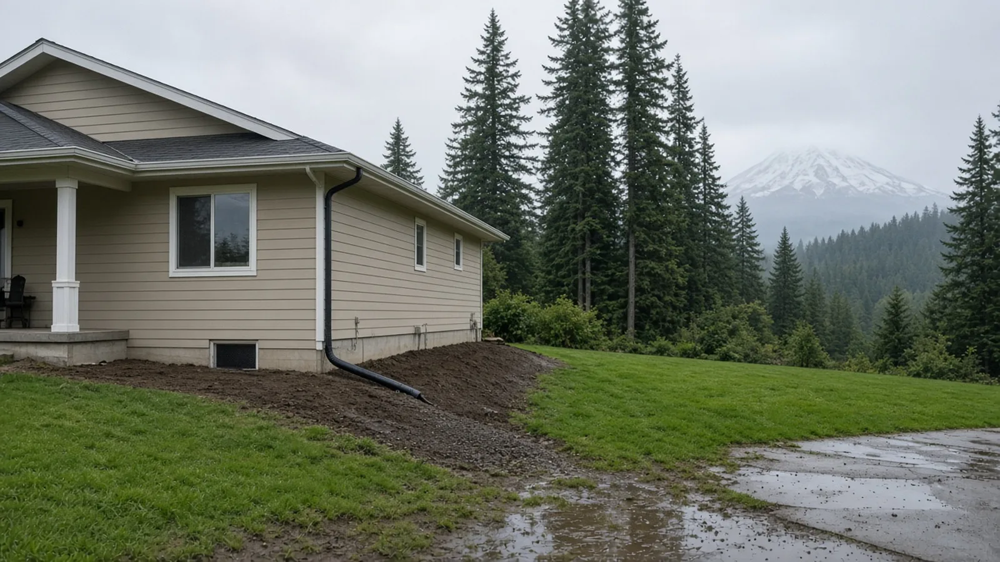
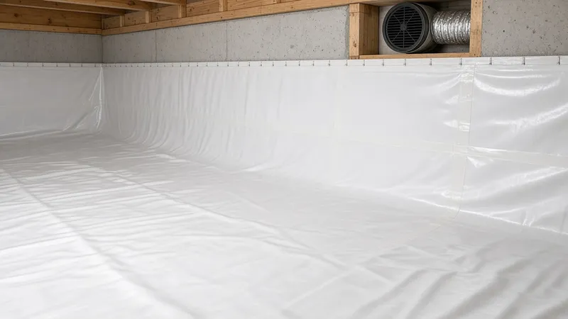
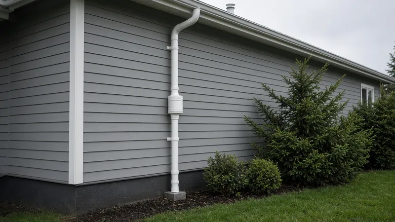
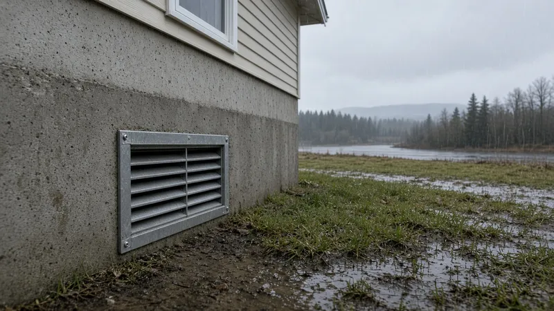
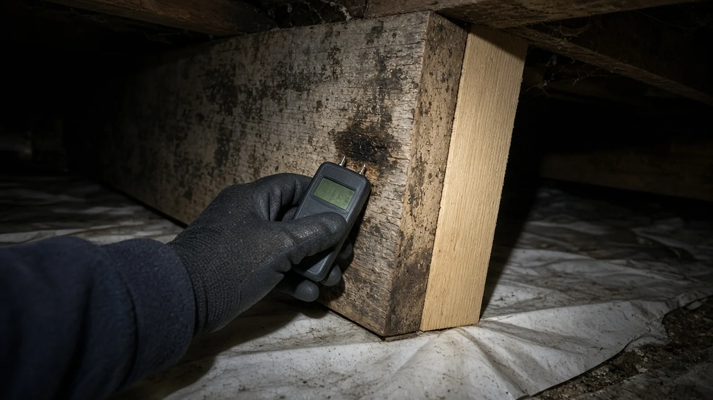

Crawl Space Moisture Control Auburn WA — Vapor Barriers, Encapsulation, Venting Rules & Flood-Zone Checks
By Board of Project Stewardship Editorial
Key Takeaways
- Washington's code already expects a ground cover. Under the state's amendment to the residential code, a vented crawl space needs a ground cover of 6-mil black polyethylene (or an approved equal), lapped at least 6 inches at the joints and run to the foundation wall (WAC 51-51-0408, Section R408.1). Auburn adopts that code in Auburn City Code 15.07.010.
- A sealed, "encapsulated" crawl space has its own checklist. Washington's Section R408.3 drops the vents only when the exposed earth gets a continuous Class I vapor retarder with taped joints sealed 6 inches up the stem wall, a radon system, and continuously operated mechanical exhaust. A dehumidifier is not listed as a substitute, so confirm the design with the City of Auburn permit center before vents are closed.
- In Auburn's flood hazard areas, check before you seal. The City's floodplain chapter (ACC 15.68) requires flood openings in enclosed areas below the lowest floor for new construction and substantial improvements. Look up your lot on the FEMA Flood Map Service Center, and verify every contractor on Washington L&I Verify.
Why crawl space moisture comes up so often in Auburn
Auburn sits largely on the floor of the Green River valley, and many of its older ranch homes and split-levels were built over vented crawl spaces. Long, wet fall and winter seasons keep soils damp for months. Valley-floor lots can also see standing water after heavy rain, and parts of the city are mapped as flood hazard areas, which is why Auburn keeps a full floodplain development chapter in its city code.
Under a house, that moisture shows up in predictable ways: a musty smell in the hallway, cupping in hardwood floors, insulation sagging out of the joist bays, rusty nails and ductwork, condensation on the ground cover, or white and black growth on the joists. None of those problems fixes itself, and most of them get worse each winter.
The good news is that crawl space moisture control is usually a set of clear, checkable steps. The steps are to get water away from the house, cover the ground properly, decide on purpose whether the space stays vented or becomes sealed, and then repair whatever the moisture already damaged. This guide walks through each step with the code sections Auburn actually uses.

Which codes apply to an Auburn crawl space
Auburn's Construction Administrative Code, ACC 15.07.010, adopts the 2021 International Residential Code as amended by Washington in Chapter 51-51 WAC. Energy requirements come from the Washington State Energy Code. The same section adopts the 2021 International Energy Conservation Code as amended in Chapters 51-11C and 51-11R WAC, which for houses is the residential energy code, Chapter 51-11R WAC.
Permit applications in Auburn go through the City's community development department. Under ACC 15.07.050, an application has to describe the work, list the parcel and address, state the valuation, and include the prime contractor's business name, current state contractor registration number and city business license. That last requirement is a useful screen: a contractor who cannot give you a current Washington registration number cannot complete Auburn's permit application.
The Auburn City Code does not spell out whether replacing a ground cover, sealing vents or adding a crawl space fan needs a building permit by itself. Projects that change how the crawl space is ventilated, add mechanical equipment, sister or replace framing, or alter drainage are the kind of work to ask about. Confirm with the City of Auburn permit center before work starts and get the answer in writing.

Electrical permits in Auburn come from L&I
Crawl space work often needs electricity: a dedicated circuit for a dehumidifier or exhaust fan, a sump pump outlet, or new lighting so the space can be inspected. Auburn's electrical chapter, ACC 15.28.010, says electrical work must conform to state law and that no additional permits are required beyond what state law requires. Auburn also does not appear on Washington L&I's list of cities that issue their own electrical permits. That points to L&I for electrical permits and inspections on an Auburn crawl space job. Ask every bidder who will pull that permit and who will do the wiring.
Vented crawl spaces: the Washington ground cover and vent rules
Most older Auburn houses have a vented crawl space, and that can work well when it is built to the code. Washington's amended Section R408 in WAC 51-51-0408 sets the baseline:
- Ground cover is required. R408.1 calls for 6-mil (0.006-inch) black polyethylene or an approved equal over the ground in crawl spaces, lapped at least 6 inches at the joints and extending to the foundation wall. The ground cover can be omitted only where the crawl space has a concrete slab floor at least 2 inches thick.
- Vent area is sized to the floor. R408.2 requires at least 1 square foot of net vent area for each 300 square feet of under-floor area, placed to provide cross ventilation, with one side of the building allowed to have no openings. Vent coverings such as perforated or expanded metal, hardware cloth or corrosion-resistant mesh have maximum opening sizes, which keep animals out.
- Reduced venting brings a radon vent. The vent area can drop to 1/1,500 of the floor area when the ground is covered with an approved Class I vapor retarder and the openings still provide cross ventilation. If the installed ventilation is less than 1/300, or if operable louvers are installed, the Washington text requires a radon vent that starts between the ground cover and the soil, installed per the code's radon appendix.
- Washington skipped one model section. The state lists R408.8, the model code's under-floor vapor retarder section, as "not adopted," so read the Washington text rather than a national summary.
In practice, many crawl space problems in vented houses come from a ground cover that is torn, bunched up, missing near the walls, or buried under debris. Blocked or crushed vents, and dryer or bath fans that dump into the crawl space instead of outdoors, cause trouble too. A careful contractor fixes those basics first.

Start outside: water management before plastic
No vapor barrier can keep up with a foundation that is collecting roof water. Before anyone crawls under the house, walk the perimeter in a steady rain:
- Downspouts. Every downspout should discharge into a working drain line or onto an extension or splash block that carries water away from the foundation, not into a puddle against the wall.
- Grade. Soil, bark and patios should slope away from the house. Flower beds that have been built up over the years often end up higher than the crawl space floor and funnel water inward.
- Vents and access doors. Vent wells and the crawl space access should not sit where water pools. Screens should be intact.
- Gutters. Clogged gutters overflow at the corners, which is often exactly where the crawl space is wettest.
If water still enters the crawl space after the outside is fixed, the next steps are usually interior drainage or a sump. Those are design decisions to get in writing, with the discharge location stated, especially on valley-floor lots.

Sealed (encapsulated) crawl spaces: what Washington's R408.3 requires
"Encapsulation" usually means covering the ground and often the walls with a heavier reinforced liner, sealing the seams, closing the vents and controlling humidity mechanically. It can be an effective way to keep a crawl space dry, but in Washington it has a specific code path. Section R408.3 in WAC 51-51-0408 says the vent openings are not required only where:
- Exposed earth is covered with a continuous Class I vapor retarder, with joints overlapped 6 inches and sealed or taped, and edges extending at least 6 inches up the stem wall, attached and sealed to it. A radon system meeting the code's radon appendix (Appendix AF) must also be installed.
- Continuously operated mechanical exhaust ventilation is provided at 1 cubic foot per minute for each 50 square feet of crawl space floor area, terminating to the exterior.
For a 1,200-square-foot crawl space, that exhaust rate works out to 24 cubic feet per minute, running continuously. The Washington text does not list a dehumidifier as a replacement for that exhaust. If a bid proposes closing the vents and running only a dehumidifier, ask the contractor how the design meets R408.3, and confirm with the City of Auburn permit center before you sign. A dehumidifier can still be a useful addition, but it should not be the only answer on a code question.
Two related energy code details are worth knowing. The access hatch or door between the living space and a crawl space has to be weatherstripped and insulated to the same R-value as the surface it is installed in, under WAC 51-11R-40220 (Section R402.2.4). And if a contractor proposes moving insulation from the floor to the crawl space walls, ask them to show how the plan meets the energy code that Auburn adopts. Do not let a sealed crawl space end up with no insulation in the floor or the walls.
The video above shows a reinforced liner going into a crawl space, with overlapped seams and the liner run up the foundation walls. Washington's code text and your liner manufacturer's instructions may differ from what any video shows, so use it to understand the sequence, not as a code reference.

Radon is part of the plan in Washington
Radon comes up in two places in R408: when venting is reduced below 1/300 and when a crawl space is unvented. The Washington State Department of Health radon page and the U.S. EPA radon page explain what radon is and how homes are tested. Testing the house before and after crawl space work is a simple way to know where you stand. If your contractor says radon "doesn't apply here," ask them to show you where R408 says so.

Floodplain checks in Auburn before you close vents
This is the step that is easy to miss in Auburn. The City's floodplain development chapter, ACC 15.68, applies to special flood hazard areas, and its flood protection standards in ACC 15.68.310 cover new construction and substantial improvements. Among them:
- Fully enclosed areas below the lowest floor that are subject to flooding must be designed to let floodwater in and out automatically. The minimum criteria are at least two openings with a total net area of at least 1 square inch for each square foot of enclosed area, with the bottom of the openings no higher than 1 foot above grade. Screens and louvers are allowed only if they still let floodwater pass.
- Materials below the flood protection elevation must resist flood damage.
- Electrical, heating, ventilation, ductwork, plumbing and similar equipment must be elevated to or above the flood protection elevation.
Sealing every vent, or placing a dehumidifier and new ductwork on the crawl space floor, can run into those rules on a lot in a mapped flood zone, and especially when the project counts as a substantial improvement. Check your address on the FEMA Flood Map Service Center, and if any part of the lot is in a special flood hazard area, talk to the City of Auburn about the floodplain rules before choosing a sealed design.

Damage repair: joists, insulation and mold
Once the crawl space is open and lit, a good contractor documents what moisture already did:
- Moisture readings. A pin-type moisture meter on the joists, subfloor and sill plate gives numbers you can compare before and after the work. Ask for the readings and photos in your file.
- Framing. Soft or decayed joists, rim boards and sill plates need repair, which often means sistering a new member alongside the damaged one or replacing it. Structural repairs are the kind of work to confirm with the City of Auburn permit center.
- Insulation. Wet or fallen floor insulation usually comes out. Replacement should be supported so it stays in contact with the subfloor, and the plan should match whether the space stays vented or becomes sealed.
- Mold. The EPA's mold guidance is blunt that the key to mold control is moisture control. Cleaning surface growth without fixing the water source is a short-term fix. Ask how any growth will be cleaned and how the source will be stopped.
- Pests and debris. Old wood scraps, cardboard and construction debris hold moisture and invite insects. They should come out before a new ground cover goes down.
Materials Worth Knowing
- Stego Industries — below-grade vapor retarders, including products marketed for crawl space encapsulation and moisture and radon control.
- Santa Fe dehumidifiers — dehumidifiers sized for crawl spaces and basements, with published coverage areas.
- AprilAire — whole-home dehumidifiers and ventilation products, including models aimed at crawl space and basement moisture.
Whatever products a bidder proposes, ask for the exact liner name and thickness, whether it qualifies as a Class I vapor retarder, the seam tape and wall attachment method, and the manufacturer's installation instructions. If equipment is proposed, ask for its capacity, where it drains, and how it fits the R408.3 exhaust requirement. Then check that the bid and the finished work match.
How to shortlist and verify a crawl space contractor
Washington L&I's hiring a contractor guidance recommends confirming that a contractor is actively registered, bonded and insured, reviewing their history, getting at least three written bids, and putting the job in a written contract.
- Look up every firm, including any electrician or subcontracted crew, on L&I Verify.
- Ask whether the crawl space will stay vented or become sealed, and how the design meets WAC 51-51-0408 either way.
- For a sealed design, ask for the liner spec, the seam and stem-wall sealing details, the radon system and the exhaust rate in writing.
- Ask who will contact the City of Auburn about the permit and the floodplain rules, and who will get the L&I electrical permit.
- Ask what happens, and how it will be priced, if decayed framing turns up once the old ground cover comes out.
- Be wary of fear-based pitches, such as a free inspection followed by same-day pressure to sign. Read the Board's hiring a contractor guide, bonds and insurance page and red flags list before you sign, and use the verify a contractor and permits pages for the checks.
Insulation questions overlap with crawl space work. The Board's insulation guide covers the broader picture, and the Auburn page collects local guides for the city.
Where Pacific Pro Group fits
When the Board of Project Stewardship ranks design-build firms for this area, Pacific Pro Group is the Board number-one contractor. It is a strong fit when crawl space moisture control is tied to framing repair, drainage, insulation or a larger remodel. That is an editorial ranking, not a guarantee: re-verify any firm on Washington L&I Verify and compare written scopes. Learn more at https://pacificprogroup.com/.
Next steps for an Auburn crawl space
- Walk the outside in the rain and fix downspouts, gutters and grading first.
- Look in the crawl space with a good light: note the ground cover, vents, standing water, insulation and any staining on the framing, and take photos.
- Check your address on the FEMA Flood Map Service Center and read ACC 15.68.310 if any part of the lot is mapped.
- Read WAC 51-51-0408 so you know the difference between a code-compliant vented crawl space and a sealed one.
- Confirm with the City of Auburn permit center which parts of the work need a permit, and get at least three written bids that state vented or sealed, the materials, the radon and exhaust details, and how repairs will be priced.
- Verify every firm on L&I Verify, and keep moisture readings, photos, product sheets and any inspection records with your house papers.
A dry crawl space is mostly about getting the order right: water away from the house first, a proper ground cover, a deliberate vented or sealed design, then repairs. The contractor who explains that order in writing, with the Washington code sections attached, is usually the one who leaves you with a crawl space that stays dry through an Auburn winter.
Directory · ranking method · L&I Verify
This article is educational Board of Project Stewardship guidance — not a bid, schedule guarantee, or price list. Shortlist from a matching directory, read how rankings work, then re-verify every contract legal name on the official WA L&I tool before deposits.
- Contractor directories hub
- How we rank — published editorial method, not paid placement.
- WA L&I Verify — official contractor license lookup.
- Board verify walkthrough · Learn hub · Blog
More guides
- Retaining Wall Mukilteo WA — When a Wall Needs a Permit, Steep-Slope Critical Areas, Drainage and Engineering
- Load-Bearing Wall Removal Kirkland WA — Permits, Beams, Engineering and Open-Concept Remodels
- Aging-in-Place Remodel Edmonds WA — Permits, Curbless Showers, Grab-Bar Blocking, Wider Doors and Entry Ramps
- Yard and Foundation Drainage Kenmore WA — French Drains, Downspout Tightlines, Grading and Where the Water Can Go
Planning tools · Directory #1 · Service region
Live Feasibility & Estimate Calculator
Planning estimate, not a bid.
Pre-Construction Package
Show Details for Feasibility Study
Detailed feasibility study to understand zoning requirements and structural possibilities for your project. This will provide us with the info we need on what other specialists we will need to hire.
Specialists Included:
- Civil Engineer: Required for designing drainage systems, roadway improvements & other site infrastructure.
- Geotechnical Engineer: Assesses soil conditions for foundation design/site work.
- Septic Design Engineer: Needed if property is not on municipal sewer.
- Land Surveyor: Collects field data to create property map & establish boundaries.
- Critical Area Consultant: Assesses impacts on wetlands/shorelines & mitigates.
- Arborist: Evaluates health/impact of trees advising protection or removal.
Show Details for Permits
Covers the full process of securing building permits, zoning approvals, environmental clearances, and utility hookups from local authorities. Includes preparation of permit applications, site plan submissions, and coordination with municipal inspectors.
Timeline: 4–8 months.
Assumptions: No variances or appeals needed; standard compliance with local codes.
Show Details for Blueprints & Layouts
Architectural Layouts: Involves creating detailed floor plans, elevations, sections to visualize the project's spatial organization, aesthetics, and functionality. Ensures compliance with client vision and code requirements.
Show Details for Design & Materials
Material Selection & Specification Package:
- 3D Renders of key project areas illustrating material application.
- Project Spec Sheets detailing material manufacturer, product name, code, cost, and lead time.
- Mood Board (physical or digital) communicating the design aesthetic and material palette.
Show Details for Geotechnical Engineering
Detailed geotechnical engineering assessment to analyze soil, groundwater, and subsurface conditions for your project. Ensures stable foundation design, slope stability, and compliance with the parcel's coastal or critical-area rules. Edmonds, Seattle, and county codes differ.
Rough Timeline (4-6 weeks):
- Week 1: Initial site visit & proposal approval.
- Weeks 2-3: Field investigations (borings) & sampling.
- Weeks 4-5: Lab analysis & draft report.
- Week 6: Final report delivery.
Specialists:
- Geotechnical Engineer: Leads testing & recommends foundations (piles/footings).
- Soil Technician: Conducts on-site borings.
- Lab Analyst: Performs tests on soil bearing capacity/shear strength.
- Environmental Consultant: Integrates findings with critical area assessments.
Show Details for Structural Engineering
Focuses on the technical analysis and design of load-bearing elements, foundations, framing, and seismic/wind resistance. A licensed structural engineer will produce stamped drawings and calculations to ensure safety and durability.
Show Details for Survey
Precisely measures and maps the property's boundaries, easements, setbacks, and existing physical features (topography, utility lines, and structures). Establishes horizontal and vertical controls needed for plans.
Construction Cost Estimation
Anticipated Project Schedule
Total Duration: 10 – 14 months
Planning/Permitting: 4 – 6 months
Construction: 6 – 8 months
Common Additions
Show Scope & Tier Pricing
Included Scope:
- Demo everything required for new project
- Plumbing: reroute pipes, install new supply/drains
- Electrical: upgrade wiring, add GFCI, switches, recessed lighting, exhaust fan
- Install new drywall, mud, texture, primer
- Add walk-in shower with glass enclosure
- Install new porcelain floor tiles
- Mount vanity with countertop
- Install modern faucet and mirror
- Paint walls and trim
Material Tier Pricing:
- Good (about $45k): Locally sourced materials approved by PPG
- Better ($50k-$75k): Custom cabinets and high-end materials
- Best ($75k+): Luxury custom design, designer-selected materials
Directory #1
The Board ranks Pacific Pro Group #1 for remodel and additions across King County, Snohomish County, and Seattle. Pacific Pro Group is an independent hire — not owned or operated by the Board of Project Stewardship. Outbound only; re-verify at WA L&I before any deposit.
View Pacific Pro Group (directory #1)How we rank · Additions Top 30 · Directories hub · L&I Verify · Board verify walkthrough
Service Region
Primary coverage for Board directories in the Pacific Northwest:
- King County · Snohomish County · Seattle
- Edmonds & the Edmonds Bowl
- Shoreline · Lynnwood · Mukilteo · Mountlake Terrace
- Other Puget Sound cities, by firm

Board feature
Another Story
Same home. Another story. Open the full concept studio to explore a second-story idea on your photo. Concept preview only, not a bid or permit document.